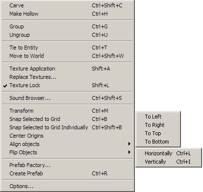
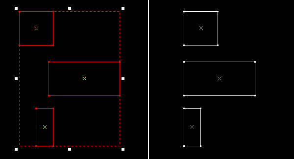
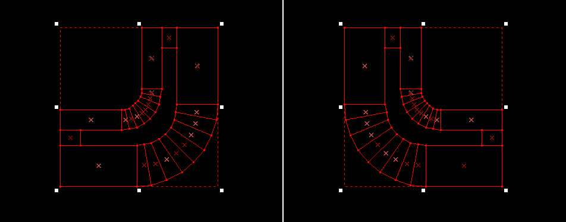

The Tools Menu
Carve Shortcut: CTRL+SHIFT+C
This will take the selected object and carve its shape out of any surrounding objects that intersect it. You can have more than one carve object selected at once, and they will each carve the surrounding solids. For more information, see Reshaping Solids.
Make Hollow Shortcut: CTRL+H
Opens the Make Hollow dlalog, which takes a selected object and generates walls out the shape, making it a hollow room.
Group and Ungroup Shortcut: CTRL+G, CTRL+U
Using Group on selected objects will bind them together so they may be acted upon simultaneously. For purposes of selecting and transforming, the grouped objects will act as one single object. You can edit the objects separately if you Ungroup them, or use the Toggle group ignore button on the MapOperations toolbar. Note that using Group is not the same as VisGrouping, which controls object visibility.
For more information on grouping, see Grouping and Visgrouping.
Tie to entity Shortcut: CTRL+T
This command converts a solid (world) object into an entity type object so it can be given parameters that affect gameplay. When you tie an object to an entity, the Object Properties dialog will pop up with a list of all available brush entities. The entity can be made up of several objects at once – simply select multiple objects before you perform the command, and all the selected objects will be a part of the entity. Objects can also be added to an existing entity by selecting the entity and the objects you will to add, and performing another Tie to entity command. You can also join two entities together in a similar way. See Creating Entities for more information.
Move to world Shortcut: CTRL+W
The Move to world command converts an entity object into a non-entity world object, and strips all entity properties from it. The command can be used to convert multiple selected entity objects at once.
Texture application Shortcut: SHIFT+A
This will switch the current tool to the Texture Application Tool, and bring up the Face Edit dialog box. These tools are used to edit texture properties of objects on a per face level. The Face Edit dialog also provides access to the displacement geometry tools.
Replace textures
This will bring up the Replace Textures dialog which allows you to search, mark or replace all textures of a certain type.
Texture lock Shortcut: SHIFT+L
This option toggles Texture lock mode on and off. Texture lock allows you to move a brush without disturbing the alignment of the texture on the object. With Texture lock disabled, if you move an object, the texture stays aligned with the original position of the object.
Tip: There are times when it is easier to resize or move an object to fit the current texture alignment instead of the other way around. In this case, disable Texture lock, move the object to fit the texture, then enable Texture lock to move the object with the texture aligned.
Sound Browser
Opens the Sound Browser dialog, which provides a listing of the available sounds in the game.
Transform Shortcut: CTRL+M
This brings up the Transform dialog, allowing you to rotate, scale, and move an object with precise values in any of the X, Y, or Z planes.
Snap Selected to Grid Shortcut: CTRL+B
Not all objects will align perfectly to the grid, due to moving or resizing of the objects or changes in the grid size. This command will snap the bottom and left sides of the object to the grid. If more than one object is selected, the command will use the lowest to the bottom and leftmost objects to align all the objects as a single group.
Snap Selected to Grid Individually Shortcut: CTRL+SHIFT+B
Identical to Snap Selected to Grid, except that each object in the selection is snapped to the grid on its own, instead of using the bottom and left edges of the group bounding box.
Center Origins
For entities with origin helpers, this command moves the origin helper back to the center of the object bounding box. Multiple objects can be selected.
Align objects
The Align objects sub-menu allows you to align objects to one another, similar to the Snap selected to grid command, but with additional options as to how the objects are aligned.

Objects can be aligned on their left, right, top, or bottom edges. The object that is farthest in the direction you wish to align stays stationary, and all the other objects are moved to align with that object’s edge. Also, the direction the objects are aligned is relative to the active 2D view.
To align a set of objects:
- Select the objects you wish to align in the 2D view you wish to align them.
- Select the direction you want the objects to align from the Align objects sub-menu in the Tools Menu. Remember the direction is relative to the current active 2D view.
- The objects will be aligned in the direction you chose.

| Using the Align Objects command to align a set of object along their left edges. |
Flip Objects Shortcut: CTRL+L, CTRL+I
The Flip objects sub-menu allows you to flip objects horizontally or vertically (or both, to mirror the object).

You can mirror multiple objects at once. A single object is mirrored about its center point, and a group of selected objects are mirrored about their common center point. Also, the direction the objects are mirrored is relative to the active 2D view.
To mirror an object or set objects:
- Select the objects you wish to mirror in the 2D view you wish to align them.
- Select the direction you want to flip the objects from the Flip objects sub-menu in the Tools Menu. Remember the direction is relative to the current active 2D view.
- The objects are flipped in the direction you chose.
|  |
| Using the Flip Objects command to Flip an object horizontally. |
Create Prefab
Creates a Hammer prefab object out of the selected objects. Hammer opens a Save As... dialog open in the Hammer prefabs directory. Type in a name and click the Save button to add the prefab to the library. See Creating and Using Prefabs for more information.
Options...
This will bring up the Options dialog box which allows you to modify a number of Hammer Editor behaviors.
© 2004 Valve Corporation. All rights reserved. Valve, the Valve logo, Half-Life, the Half-Life logo, the Lambda logo, Steam, the Steam logo, Team Fortress, the Team Fortress logo, Opposing Force, Day of Defeat, the Day of Defeat logo, Counter-Strike, the Counter-Strike logo, Source, the Source logo, Hammer and Counter-Strike: Condition Zero are trademarks and/or registered trademarks of Valve Corporation. Microsoft and Visual Studio are trademarks and/or registered trademarks of Microsoft Corporation. All other trademarks are property of their respective owners.